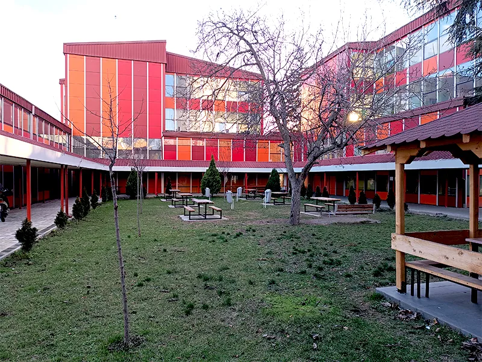
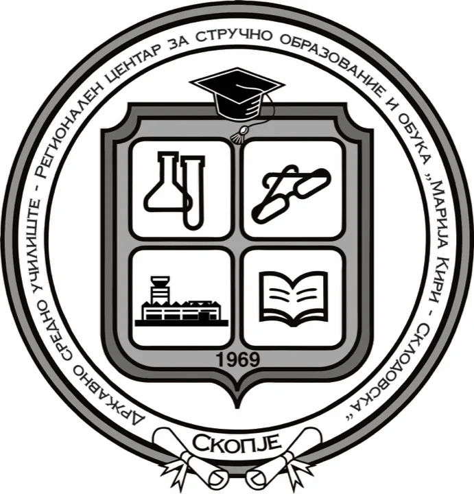

Државно средно училиште – Регионален центар за стручно образование и обука Марија Кири – Склодовска
Стручно образование во хемијата, технологијата, оптиката и здравството. Скопје, од 1969 година.


За училиштето
Со решение на Градското собрание на Скопје бр. 22565/1 од 18.09.1969 година, училиштето беше верифицирано како Хемиски училишен центар „Марија Кири – Склодовска“, за хемиско-технолошка струка и образование на кадри за хемиската индустрија.
Денес, во училиштето се образуваат ученици со четиригодишно и тригодишно стручно образование од хемиско-технолошка струка, струка лични услуги и здравствена струка.
Прочитајте го целиот историјат- 1969
Со решение бр. 22565/1 од 18.09.1969 година, училиштето е верифицирано како Хемиски училишен центар „Марија Кири – Склодовска“.
- 1997
Се преименува во Државно средно хемиско-технолошко училиште „Марија Кири – Склодовска“.
- 2006
Продолжува со работа како Средно училиште на Град Скопје „Марија Кири – Склодовска“.
- 2009
Училиштето е носител на 13-та Ноемвриска награда за успешна работа во образованието и воспитанието.
- 2026
Од 01.09.2026 година работи како Државно средно училиште – Регионален центар за стручно образование и обука.
Струки и образовни профили
Училиштето образува кадри во три струки, со четиригодишно и тригодишно стручно образование.
Хемиско-технолошка струка
- Хемиски-лабораториски техничар
- Техничар за козметички и хемиски производи
- Техничар за заштита на животна средина
Струка лични услуги
- Техничар за очна оптика
Здравствена струка
- Фармацевтски техничар / фармацевтски техничар во фармацевтска индустрија
- Медицински лабораториско-санитарен техничар
- Болничар-негувател
Програми за пожарникар
- Пожарникар од хемиско-технолошка струкаЗанимање
- Професионален пожарникар од хемиско-технолошка струкаПост-средно образование
- Посебна програма за пожарникарОбразование на возрасни
Документи
Програми, извештаи, правилници и финансиски документи на училиштето.
Програма за развој на училиштето за период од 2024 година до 2028 година
Отвори: Програма за развој на училиштето за период од 2024 година до 2028 годинаГодишна програма за работа на училиштето во учебната 2026/2027 година
Отвори: Годишна програма за работа на училиштето во учебната 2026/2027 годинаГодишен извештај за работа на училиштето во учебната 2025/2026 година
Отвори: Годишен извештај за работа на училиштето во учебната 2025/2026 годинаСтатут на Државното средно училиште – Регионален центар за стручно образование и обука
Отвори: Статут на Државното средно училиште – Регионален центар за стручно образование и обукаУплатници од училиштето по разни основи
Отвори: Уплатници од училиштето по разни основи
Фотографии
Училишната зграда, дворот, спортските терени и кабинетите.


Контакт
- Адреса
- бул. „Трета Македонска Бригада“ бр. 63-А
1000 Скопје, општина Аеродром - Телефон
- +389 2 2403 141